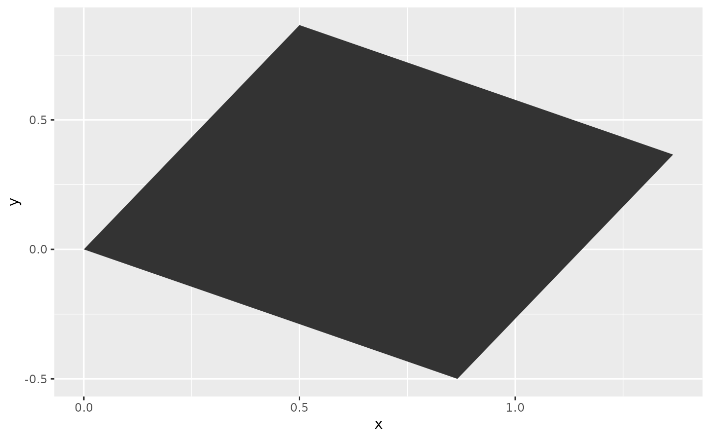
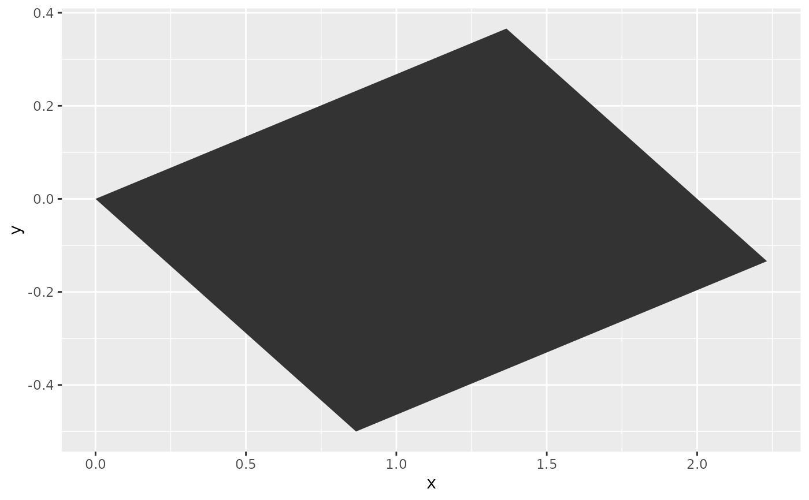
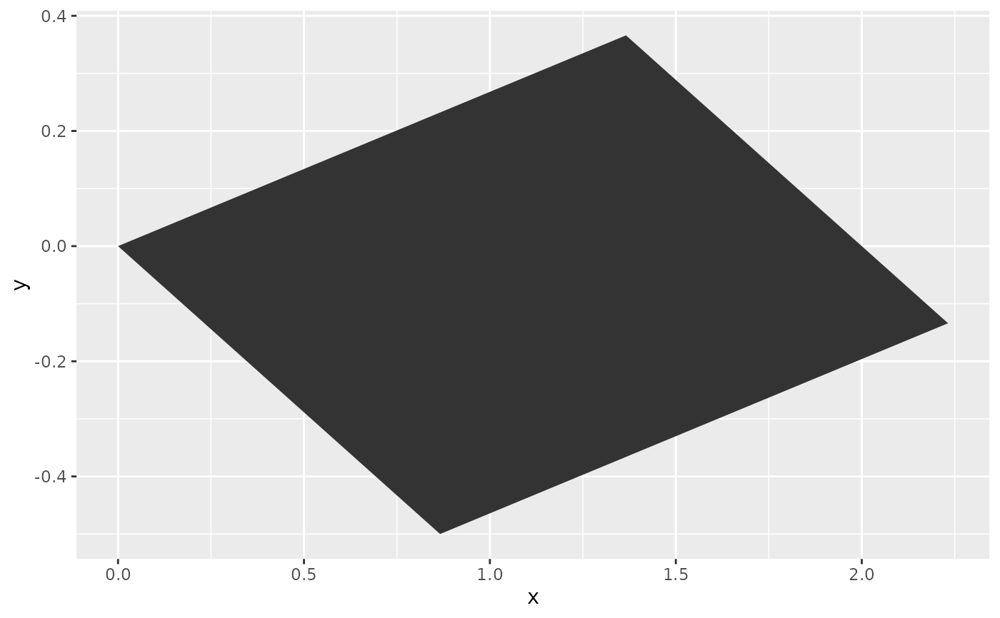
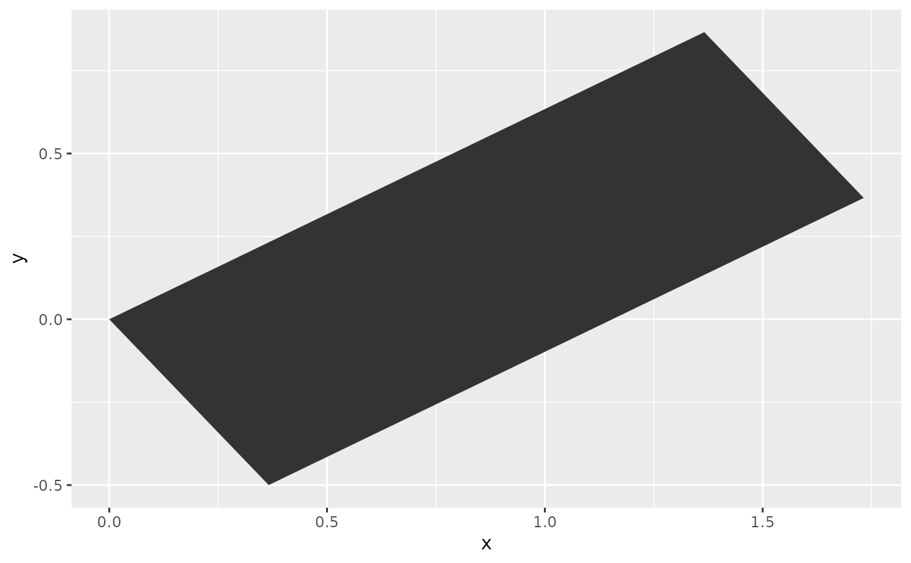

Transforms coordinates in two dimensions in a linear manner for layers that
have an x and y parametrisation.
Arguments
- scale
A
numericof length two describing relative units with which to multiply thexandycoordinates respectively.- shear
A
numericof length two giving relative units by which to shear the output. The first number is for vertical shearing whereas the second is for horizontal shearing.- angle
A
numericnoting an angle in degrees by which to rotate the input clockwise.- M
A
2x2realmatrix: the transformation matrix for linear mapping. Overrides other arguments if provided.
Details
Linear transformation matrices are 2 x 2 real
matrices. The 'scale', 'shear' and 'rotation'
arguments are convenience arguments to construct a transformation matrix.
These operations occur in the order: scaling - shearing - rotating. To
apply the transformations in another order, build a custom 'M'
argument.
For some common transformations, you can find appropriate matrices for the
'M' argument below.
Common transformations
Identity transformations
An
identity transformation, or returning the original coordinates, can be
performed by using the following transformation matrix: | 1 0 || 0 1 |
or M <- matrix(c(1, 0, 0, 1), 2)
Scaling
A scaling transformation multiplies the dimension of
an object by some amount. An example transformation matrix for scaling
everything by a factor 2: | 2 0 || 0 2 |
or
M <- matrix(c(2, 0, 0, 2), 2)
Squeezing
Similar
to scaling, squeezing multiplies the dimensions by some amount that is
unequal for the x and y coordinates. For example, squeezing
y by half and expanding x by two:
| | | 2 | 0 | | | |||
| | | 0 | 0.5 | | |
or M <- matrix(c(2, 0, 0, 0.5), 2)
Reflection
Mirroring the coordinates around one of the axes. Reflecting around the x-axis:
| | | 1 | 0 | | | |||
| | | 0 | -1 | | |
or M <- matrix(c(1, 0, 0, -1), 2)
Reflecting around the y-axis:
| | | -1 | 0 | | | |||
| | | 0 | 1 | | |
or M <- matrix(c(-1, 0, 0, 1), 2)
Projection
For projecting the coordinates on one of the axes,
while collapsing everything from the other axis. Projecting onto the
y-axis:
| | | 0 | 0 | | | |||
| | | 0 | 1 | | |
or
M <- matrix(c(0, 0, 0, 1), 2)
Projecting onto the
x-axis:
| | | 1 | 0 | | | |||
| | | 0 | 0 | | |
or
M <- matrix(c(1, 0, 0, 0), 2)
Shearing
Tilting the coordinates horizontally or vertically. Shearing vertically by 10\
| | | 1 | 0 | | | |||
| | | 0.1 | 1 | | |
or M <- matrix(c(1, 0.1, 0, 1), 2)
Shearing horizontally by 200\
| | | 1 | 2 | | | |||
| | | 0 | 1 | | |
or M <- matrix(c(1, 0, 2, 1), 2)
Rotation
A rotation performs a motion around a fixed point, typically the origin the coordinate system. To rotate the coordinates by 90 degrees counter-clockwise:
| | | 0 | -1 | | | |||
| | | 1 | 0 | | |
or M <- matrix(c(0, 1, -1, 0), 2)
For a rotation around any angle \(\theta\) :
| | | \(cos\theta\) | \(-sin\theta\) | | | |||
| | | \(sin\theta\) | \(cos\theta\) | | |
or M <- matrix(c(cos(theta), sin(theta), -sin(theta), cos(theta)), 2)
with 'theta' defined in radians.
Examples
df <- data.frame(x = c(0, 1, 1, 0),
y = c(0, 0, 1, 1))
ggplot(df, aes(x, y)) +
geom_polygon(position = position_lineartrans(angle = 30))

# Custom transformation matrices
# Rotation
theta <- -30 * pi / 180
rot <- matrix(c(cos(theta), sin(theta), -sin(theta), cos(theta)), 2)
# Shear
shear <- matrix(c(1, 0, 1, 1), 2)
# Shear and then rotate
M <- rot %*% shear
ggplot(df, aes(x, y)) +
geom_polygon(position = position_lineartrans(M = M))

# Alternative shear and then rotate
ggplot(df, aes(x, y)) +
geom_polygon(position = position_lineartrans(shear = c(0, 1), angle = 30))

# Rotate and then shear
M <- shear %*% rot
ggplot(df, aes(x, y)) +
geom_polygon(position = position_lineartrans(M = M))
